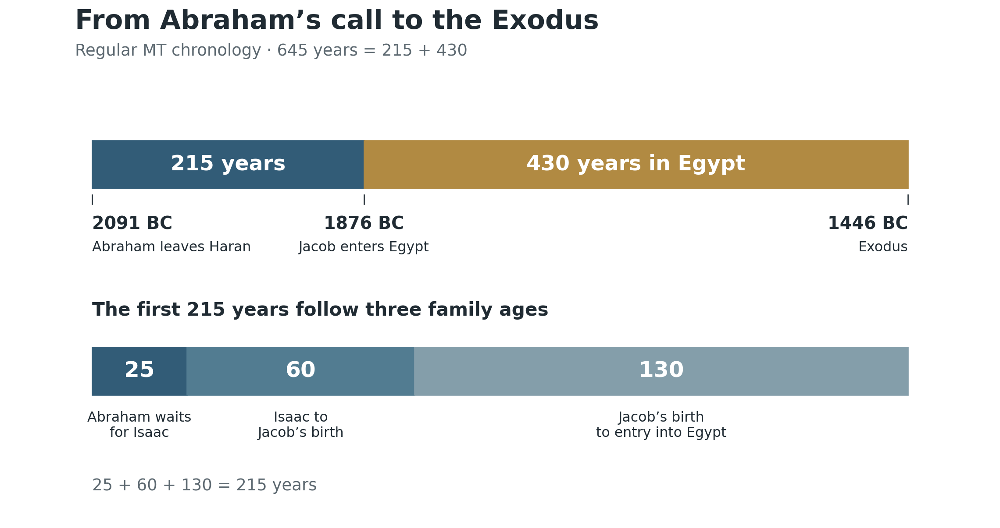
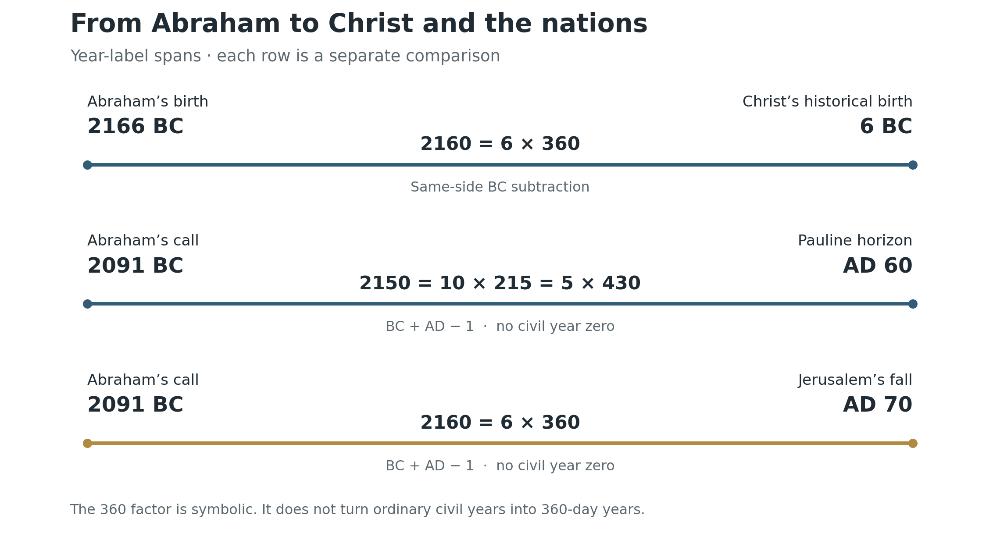

Abraham and the Promise to the Nations
Book 2 · Celestial Signs of the First Advent · Chapter 4
The promise that gives the signs their direction
“and all the families of the earth will be blessed through you.”
Genesis 12:3b BSB
The child whose birth we have been considering belongs to a promise made long before Bethlehem. God told Abraham that blessing would reach all the families of the earth through him. That promise gives the wider history in this book its direction. The Exodus, Israel’s entry into the land, the coming of Christ, and the Gospel among the nations belong to one unfolding purpose.[1]
I want to return to Abraham before following the celestial signs through those events. Otherwise, we can become absorbed in the movements of the Sun, Moon, and planets while losing sight of what the movements bear witness to. God is bringing His promised blessing into the world through His Son. The heavens belong to that history because they belong to Him.
Abraham stands at a useful point from which to see the whole. He is promised descendants while childless, a land in which he remains a stranger, and blessing for nations he will never visit. God asks him to receive a future far larger than the part of it he will live to see. That is already the perspective this book requires.
God gives the stars their meaning
In Genesis 15, Abraham’s difficulty is plain. He has no son to inherit what God has promised. The LORD takes him outside and says:
“Now look to the heavens and count the stars, if you are able.” Then He tells him, “So shall your offspring be.” Abraham believes the LORD, and his faith is credited to him as righteousness (Genesis 15:5–6).[2]
God Himself connects the sky with the promised family. The stars are real, and so is the son Abraham still lacks. The connection between them comes through God’s speech. Abraham receives the meaning of what he is shown.
This matters when we approach the later signs. A calculation can tell us where an eclipse occurred or how the planets were arranged. Scripture supplies the history and language through which I read those events. In Abraham’s case, the text makes the connection explicit: the multitude above him becomes a witness to the multitude God will bring from him.
Genesis gives no civil date for this encounter. It provides no basis for attaching a particular eclipse or planetary conjunction to it. We can leave that date open and still recognize the force of the event. Here is a biblical account in which God deliberately directs a man toward the heavens to understand what He intends to do on earth.
Nor does the comparison require one named star for every descendant. God tells Abraham to attempt a count beyond his ability, then promises offspring beyond the evidence of his present circumstances. The scale of the sky enlarges his view of the promise.
The heavenly witness therefore reaches beyond what Abraham can verify in his lifetime. He will see Isaac. He will not see all the nations blessed through Christ. The difference between those two horizons runs through the rest of Scripture.
The promise takes flesh in a son
The promise becomes increasingly particular. Abraham will have a son through Sarah, and the covenant will continue through Isaac. At 99, Abraham receives circumcision as the covenant sign. At 100, he receives the promised son. Isaac is circumcised on the eighth day (Genesis 17:19–24; 21:1–5).[3]
We have already considered birth and the eighth day in the received calendar surrounding Jesus. Isaac gives that discussion an earlier covenant setting. The connection is meaningful because Scripture places the son and the sign together. It does not require us to move Isaac’s birth onto December 25 or assign a recovered civil date to his circumcision.
The age notices also make the waiting measurable. Abraham leaves Haran at 75. Isaac is born when he is 100. There are 25 years between those two points. The son comes within Abraham’s life, but after a substantial part of it has passed.
On Moriah, the promise is tested at its most vulnerable point. Isaac carries the wood. Abraham prepares to offer the son through whom the descendants have been promised. An angel calls from heaven and stops him, and Abraham offers the ram provided in Isaac’s place. Afterward, the promise of blessing to the nations is repeated (Genesis 22:6–18).[4]
I read the Cross in that account. The beloved son, the wood, and the provided sacrifice belong to the same scriptural movement we followed in Book 1. Hebrews adds that Abraham reasoned God could raise the dead; receiving Isaac back was, in that sense, a return from death (Hebrews 11:17–19). The comparison has substance because Isaac’s actual survival preserves the line through which Christ will come.[5]
John brings Abraham and Christ together directly. Jesus says, “Your father Abraham rejoiced that he would see My day. He saw it and was glad” (John 8:56).[6] John does not explain there precisely how Abraham saw it. I will not fill that silence with an invented astronomical observation. Christ’s own statement is enough to establish that Abraham’s hope reached toward Him.
Keep the chronology in view
For the calculations in this chapter, I use the Repository’s regular Masoretic chronology, abbreviated MT. The controlling anchors are Abraham’s birth in 2166 BC, his departure from Haran at 75 in 2091 BC, Jacob’s entry into Egypt in 1876 BC, and the Exodus in 1446 BC. These are the dates of the chronological framework used here; Genesis does not print BC labels beside its events.[7]
The 2091 BC call date refers to the departure at 75. Acts 7:2 also describes God’s appearance to Abraham in Mesopotamia before he lived in Haran. We should not assign every stage of his calling to the single departure date.[8]
The family ages connect the departure to the entry into Egypt. Abraham waits 25 years for Isaac. Isaac is 60 when Jacob is born. Jacob is 130 when he stands before Pharaoh. Thus:
25 + 60 + 130 = 215 years.


The next span is twice as long. Under the MT reading used here, Israel’s residence in Egypt runs from 1876 BC to 1446 BC:
1876 − 1446 = 430 years.
Together, the two spans give 215 + 430 = 645 years from Abraham’s departure to the Exodus. The 430 describes the Egyptian residence in this chronology; it does not mean that every year of that residence was spent in slavery.[9]
There is a distinction to keep clear for readers familiar with Galatians 3:17 and its 430 years from covenant to law. The Repository also preserves a chronology dividing the Canaan and Egypt sojourns into 215 + 215 years. In that arrangement, Abraham’s call is 1876 BC and Jacob’s entry is 1661 BC, with the Exodus still at 1446 BC. It is a separate arrangement. We cannot combine its 430-year total with the 2091 BC call used here. My purpose in naming it is to keep the counts honest while following the MT sequence in the present chapter.[10]
These intervals will matter when we reach the Exodus and Conquest signs. The people who leave Egypt are the family promised to Abraham. Their deliverance has been anticipated within the covenant itself. The covenant gives us a reason to examine the heavens around those events: they are stages in the deliverance God has promised.
Two births separated by 2160 years
The regular chronology also joins Abraham’s birth to the historical birth of Christ through a clear span:
2166 BC to 6 BC = 2160 years = 6 × 360.
File 1 develops this as six prophetic days of 360 years, reaching from Abraham to Christ. The subtraction is exact between the stated year labels. Reading the six units as a pattern of divine work is the theological interpretation placed upon it.[11]
The endpoint here is the historical 6 BC birth anchor. It is distinct from the received December 25, 1 BC birth and January 1, AD 1 naming framework used in the preceding chapters. Those dates serve different parts of the argument. Substituting one for the other changes the count.
The 360 in this comparison is a prophetic unit. We are counting 2160 ordinary years between BC year labels, then expressing that number as six units of 360. We are not claiming that those ordinary years each contained only 360 days.
I find the relation fitting because Abraham’s life begins the personal history of the promise, and Christ’s birth brings the promised heir into the world. The number draws attention to that relation. Its meaning rests in the persons and the promise at either end.
From the call to the Gospel among the nations
A second count begins with Abraham’s call in 2091 BC. The Repository carries it forward to AD 60, its Pauline horizon associated with the Gospel reaching Rome:
2091 + 60 − 1 = 2150 years = 10 × 215 = 5 × 430.
The subtraction of 1 is necessary because the civil BC and AD calendar has no year zero. File 19 explicitly preserves this Abraham to Rome span. AD 60 functions here as the Repository’s chronological endpoint; Acts does not supply an AD year number for Paul’s arrival.[12]


The 215-year family span and the 430-year Egypt span now reappear at a larger scale. I read that recurrence as a fitting frame for the promise moving from one household toward the nations. The arithmetic does not establish Paul’s chronology independently; it displays the relation once the stated dates are in place.
Acts ends with Paul in Rome, receiving visitors and proclaiming the kingdom of God and the Lord Jesus Christ. He has already declared that God’s salvation has been sent to the Gentiles (Acts 28:28–31). The narrative has carried the witness from Jerusalem to the imperial capital. That gives the long count a concrete subject.[13]
If we carry the same 2091 BC starting point to Jerusalem’s fall in AD 70, the span becomes:
2091 + 70 − 1 = 2160 years = 6 × 360.
That is 10 years beyond the AD 60 endpoint. The 2150 and 2160 counts therefore describe different spans. Neither should be rounded into the other. And the 2160 from the call to AD 70 must be distinguished from the earlier 2160 between Abraham’s birth and Christ’s birth: both endpoints have changed.[14]
This later comparison places the first-century crisis within the wider history of the promise. I will return to the events around AD 70 in their own chapters. For now, the point is that the Gospel’s movement among the nations continues through the upheaval. Jerusalem’s destruction is a terrible event within that history, while the promised blessing reaches beyond the city.
The nations were within the promise from the beginning
Paul identifies the blessing of the Gentiles with the Gospel announced beforehand to Abraham. He identifies Christ as the promised seed, and those who belong to Christ as Abraham’s seed and heirs according to the promise (Galatians 3:8, 16, 29).[15]
This explains why a book concerned with Israel’s calendar and the heavens can move toward the Gospel among the nations without changing its subject. The nations were already named when Abraham was called. Their inclusion reveals the reach of what God had said.
Romans 4 makes the same reach visible in another way. Abraham’s faith is credited as righteousness before his circumcision. He can therefore be father to believing people from both the circumcised and the uncircumcised. Paul speaks of the promise in terms of inheriting the world (Romans 4:9–17).[16]
The widening begins with a particular man, an actual family, and a particular land. It reaches the nations through the Jewish Messiah. I want to retain that shape as we follow the signs. The promised family does not become less important as its purpose becomes clearer.
Hebrews raises the view further. Abraham lives in tents in the promised land while looking toward the city whose architect and builder is God. The patriarchs desire a heavenly country. Their deaths do not exhaust what God has promised them (Hebrews 11:9–16).[17]
That is how I understand the earthly and heavenly perspectives belonging together. Canaan matters. So do the generations, the journeys, and the deaths. Yet the enduring inheritance exceeds what any of those men possessed during his earthly life. We need the higher view to see the extent of the promise.
The history is also being witnessed from heaven
Paul says that the Gentiles are fellow heirs in Christ, and then gives their inclusion a heavenly audience. Through the church, God’s wisdom is being made known to rulers and authorities in the heavenly realms (Ephesians 3:6–11).[18]
The gathering of Abraham’s family through Christ therefore has significance beyond the people who hear the Gospel on earth. Heaven witnesses what God is doing. This is part of the scriptural basis for the perspective I take throughout this book.
An eclipse can accompany that history even where no local observer sees it. A procession of planets can be ordered within it without a surviving human account of anyone understanding the arrangement. When I interpret such an event as a sign, I am considering its place before God and the heavenly witnesses as well as its appearance from the ground. Each astronomical claim still needs its own evidence. Human recognition is a further question.
Abraham’s account helps us keep the order clear. God speaks, directs his attention to the heavens, and promises offspring. The visible sky bears witness to a future Abraham cannot yet see. Later generations live within that future, often with little understanding of how much of the promise their own lives are carrying forward.
That brings us to Egypt. The family has multiplied, but it is held under another king. In the next chapter, we will examine the celestial signs around the Exodus, keeping Abraham’s promise in view. The deliverance of his descendants is the next great movement in a purpose that will reach Christ and the nations.
Sources and calculation notes
1. Genesis 12:1–7 BSB. The opening quotation is the final clause of verse 3, including its introductory “and.” The book’s reading of the history develops from this promise. Return
2. Genesis 15:1–7 BSB. The two quoted statements are from verse 5. The chapter later marks sunset and darkness (verses 12, 17); no exact clock time, civil date, eclipse, or named constellation is assigned here. Return
3. Genesis 17:19–24 BSB and Genesis 21:1–5 BSB. Abraham’s ages 99 and 100 and Isaac’s eighth-day circumcision are explicit. The connection to Christ is typological. Return
4. Genesis 22:6–18 BSB. The ram is the animal actually sacrificed in Isaac’s place; it should not be changed to a lamb when retelling the event. The reading toward the Cross is the author’s interpretation. Return
5. Hebrews 11:17–19 BSB. Isaac’s return is figurative in relation to death; the account does not say that he was killed and physically resurrected. Return
6. John 8:56 BSB. Jesus’ statement establishes the connection; the mechanism of Abraham’s seeing is not specified in that verse. Return
7. Current Canon: File 1 §2.1, File 5 §0.1 and §1, and File 16 §2, checked October 19, 2026. This chapter follows regular MT biography and the primary 1446 BC Exodus. Other chronological states are not silently substituted. Return
8. Genesis 12:4 BSB and Acts 7:2–3 BSB. The departure at 75 and the earlier Mesopotamian appearance are distinguished. The chapter does not attempt to settle the separate Terah/Acts harmonization. Return
9. Genesis 21:5, 25:26, 47:9, and Exodus 12:40–41 BSB. Derivation: 100 − 75 = 25; 25 + 60 + 130 = 215; 2091 − 215 = 1876; 1876 − 430 = 1446. Isaac’s 2066 BC and Jacob’s 2006 BC birth labels follow from these same ages and anchors. They require no added generational adjustment. Return
10. Galatians 3:17 BSB; File 1 §2.1 and File 5 §0.1. The Repository distinguishes MT 430-in-Egypt from the comparative SP/LXX 215 + 215 arrangement. Naming both does not harmonize every textual question or permit their dates to be mixed. No single 430-year call-to-Exodus span is claimed for the 2091 BC MT call. Return
11. File 1 §5.1 controls 2166 − 6 = 2160 and the six-prophetic-days interpretation. File 13 preserves the historical and received birth frameworks separately. Year-label subtraction does not establish matching birthdays or an exact interval in days. Return
12. File 19 §10.3: 2091 + 60 − 1 = 2150 = 5 × 430 = 10 × 215. Its AD 60 Pauline horizon is retained as the framework endpoint, not presented as a date explicitly written in Acts. Return
13. Acts 28:28–31 BSB. Paul’s two years of ministry at the end of Acts should not be collapsed into an exact arrival day or the single AD 60 label. Return
14. The 2091 BC → AD 70 comparison is an explicitly derived extension of the call date: 2091 + 70 − 1 = 2160. It is not File 1’s birth-to-birth span. AD 80 would give 2170 years. The raw Section 9 §9.7a language linking 2150/2160 to an AD 70/80 terminus and a common 46½-year harmonic is not reproduced: it does not supply a sufficient derivation. The 360 factor here is symbolic; no conversion to 360-day civil years is made. Return
15. Galatians 3:8, 16, 29 BSB. The identification of Christ and those belonging to Him with Abraham’s seed follows Paul’s argument. Return
16. Romans 4:9–17 BSB. Faith before circumcision and the inheritance of the world give the promise its scope in Paul’s exposition. Return
17. Hebrews 11:9–16 BSB. The heavenly country and city are explicit; the relationship of the earthly and enduring inheritance is the author’s reading. Return
18. Ephesians 3:6–11 BSB. The text explicitly gives the gathering in Christ a heavenly audience. Applying that perspective to individually established celestial events is the author’s interpretation. Return
Scripture quotations are from the Berean Standard Bible (BSB), dedicated to the public domain. Berean Bible.
← Previous: Chapter 3 — The Moon and the Manger
Book 2 contents
Next: Chapter 5 — The Exodus in the Heavens →